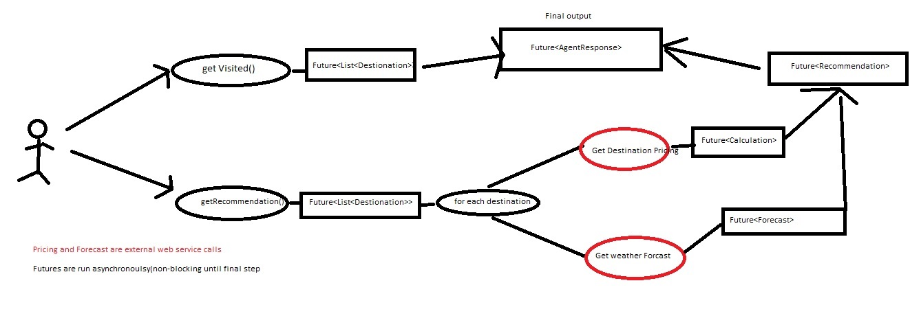

This project is running on top of SpringBoot/Rest using Futures from the following libraries/toolkit
Original problem domain is taken from Jersey's framework examples here
more blogging about that later.... Jersey's client provide a nice support for RxJava... Wish Spring RestTemplate has that kind of support ... maybe the Spring team wants to provide
tigher integration with their Reactor project instead ?
Problem domain: 
we want to do all of these concurrently by composing futures to execute the call asynchronously so that its non-blocking
For each for these libraries, i'll write a few blog entries on how these awesome libraries/toolkit abstract away the pain for writing/managing concurrency code.... and some spring/springboot topics .... blog could be found here https://randomthought2015.wordpress.com
Twitter's Finagle is also another interesting library for composing futures that I haven't explored... maybe soon
Also, things that I kinda not focus on at the moment are Error Handling and Unit Test... Will blog more about these topics shortly
Check out this String Controller TravelAgentController the code is fairly straight forward.
@RestController
public class TravelAgentController {
@RequestMapping("/api/travelSuggestion")
public AgentResponse suggestSynch() {
1. get the visited destinations
2. get the recommended destinations
3. For each of the recommended, get the weather forecast and the cost
4. combined everything into a resonse object
5. set the processing time, and return back to the client as a REST Object
}
}
{{serverResponse}}
@RestController
public class TravelAgentGuavaController {
@RequestMapping("/api/travelGuava")
public DeferredResult guavaFutureWithCallback() {
ListenableFuture> combinedFutures =
Futures.successfulAsList(asList(visited(response), recommended(response)));
Futures.addCallback(combinedFutures,
...
return deferredAgentResponse;
}
}
Spring also provide it's own ListenableFuture ... there are some Futures conversion going on in there .. i'll write
more about this.
Google guava's future is very powerful, but it's hard to compose and hard to read. I think the reason was it's was built on top JDK6/7, so there are a lot of noises when we want to compose futures together.
{{guava7Response}}
check out this controller GuavaWithLamdaController, basically try out java-8 lambda 8 syntax on top of google guava to see how it looks
@RestController
public class GuavaWithLamdaController {
@RequestMapping("/api/travelGuavaLamda")
public DeferredResult futuresWithLambda() {
}
}
{{guava8Response}}
Java 8 makes a big improvement to the Java Future that was introduced in java5 Futures- namely CompletableFuture.
CompletableFuture is sort of like a combination of ListenableFuture and SettableFuture in Guava's library. It totally how we compose futures and writing asynch code
Check out this controller Java8CompletableFutureController
I'll write a blog about this soon
@RestController
public class Java8CompletableFutureController {
@RequestMapping("/api/travelJava8")
public DeferredResult futureComposing() {
DeferredResult deferredResult = new DeferredResult();
final long time = System.nanoTime();
CompletableFuture.completedFuture(new AgentResponse())
.thenCombine(visited(), AgentResponse::visited)
.thenCombine(getRecommendations(), AgentResponse::recommended)
.whenCompleteAsync((response, throwable) -> {
response.setProcessingTime((System.nanoTime() - time) / 1000000);
deferredResult.setResult(response);
});
return deferredResult;
}
}
{{java8Response}}
Composing Rxjava Using Observables
Rxjava is one of very very very powerful library for writing concurrency code... Reactive Extension was originated from Microsoft and later made it way to Netfix. RxJava. Pretty much everything in RxJava are Observables. I'll write some more stuff about this soon, but check out this controller TravelAgentRxJavaController to see how RxJava's observables are used to compose asynch programming.
@RestController
public class TravelAgentRxJavaController {
@RequestMapping("/api/rxJavaTravelAgent")
public DeferredResult observable() {
final long time = System.nanoTime();
DeferredResult deffered = new DeferredResult<>();
Observable.just(new AgentResponse())
.zipWith(visited(), (response, visited) -> {
response.setVisited(visited);
return response;
})
.zipWith(recommended(), (response, recommendations) -> {
response.setRecommended(recommendations);
return response;
})
.observeOn(Schedulers.io())
.subscribe(response -> {
response.setProcessingTime((System.nanoTime() - time) / 1000000);
deffered.setResult(response);
});
return deffered;
}
}
{{rxJavaResponse}}
Using the Ask Pattern and and Futures Compose
Akka is another one of those brilliant toolkit from Typesafe. Akka uses Actors model for concurrency. Actors pass messages to other actors
synchronously/asynchronously to achieve work. Here is the link.
One of the less often talk about feature
of the akka toolkit is Futures. Futures in Akka toolkit are composable. In the earlier version, Futures are part of Akka's dispatcher.
Howerver, newer version combines that to use Scala's Futures instead.
here is a good article that talks about using Futures for concurrency instead of Actor Dont use actor for concurrency
Couple things I wanted to note... This example doesn't need to use Actor at all, i just wanted to mix actor and
Futures together to see how they works together.
If there is an option to use Akka from scratch, I think's its better to use Scala instead of Java -- mainly because
it's more concise to express something in scala than java.
Check out this AkkaTravelAgentController for more details .. I'll have a blog about this soon when i have time
@RestController
public class AkkaTravelAgentController {
@RequestMapping("/api/akkaActorTravelAgent")
public DeferredResult<AgentResponse> processRequest() {
final Future<Object> visitedRequest = Patterns.ask(recommenderActor, new RequestVisit(), new Timeout(Duration.create(5, TimeUnit.SECONDS)));
final Future<Object> recommendations = Patterns.ask(recommenderActor, new RecommendationRequest(), new Timeout(Duration.create(5, TimeUnit.SECONDS)));
.
.
.
agentResponseFuture.onComplete(new OnComplete<AgentResponse>() {
@Override
public void onComplete(Throwable failure, AgentResponse response) throws Throwable {
if (response != null) {
response.setProcessingTime((System.nanoTime() - time) / 1000000);
deferredResult.setResult(response);
} else {
deferredResult.setErrorResult(failure);
}
}
}, SpringAppContext.actorSystem().dispatcher());
return deferredResult;
}
}
{{akkaFutureResponse}}